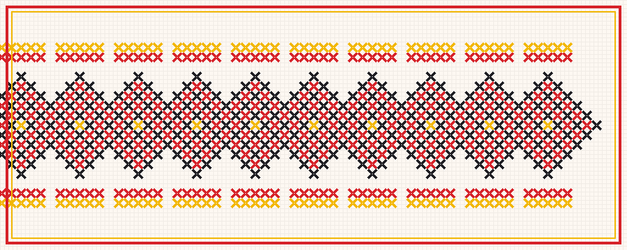
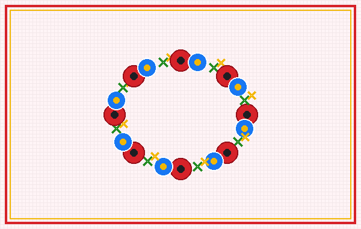

Тисячолітня історія
Перші згадки про вишитий одяг на теренах України сягають часів скіфів та Трипільської культури. Орнаменти передавалися від матері до доньки як родинна книга.
Відкрийте для себе яскравий світ народного мистецтва, де кожен стібок береже пам'ять предків, красу рідної землі та силу оберегу.
Дослідити техніки →
Перші згадки про вишитий одяг на теренах України сягають часів скіфів та Трипільської культури. Орнаменти передавалися від матері до доньки як родинна книга.
Хрестик, гладь, низинка, мережка, білим по білому — кожен регіон України винайшов унікальні способи переплетення ниток на полотні.
Калина, дуб, берегиня, восьмикутна зірка — кожен символ несе побажання здоров'я, кохання, добробуту та захисту в дорозі.

Сьогодні українська вишивка підкорює світові подіуми, надихає дизайнерів, цифрових художників та об'єднує мільйони людей у Всесвітній день вишиванки щороку у третій четвер травня.
Поєднання автентичних орнаментів із сучасним кроєм робить вишитий одяг стильним символом гідності та свободи.